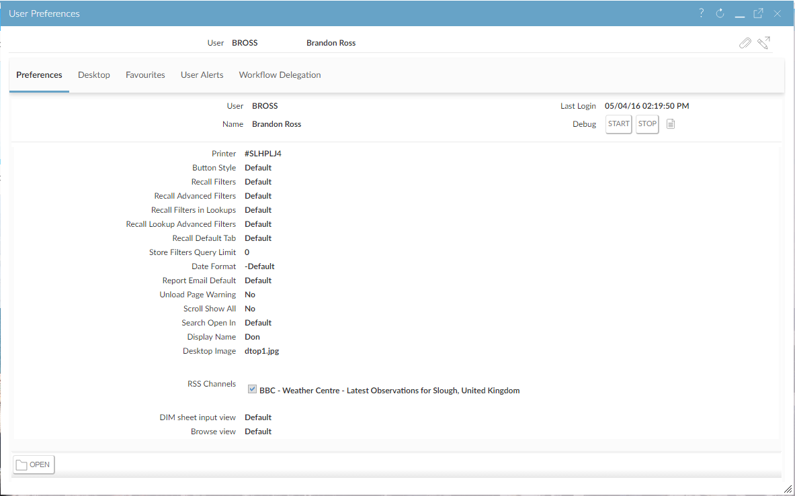
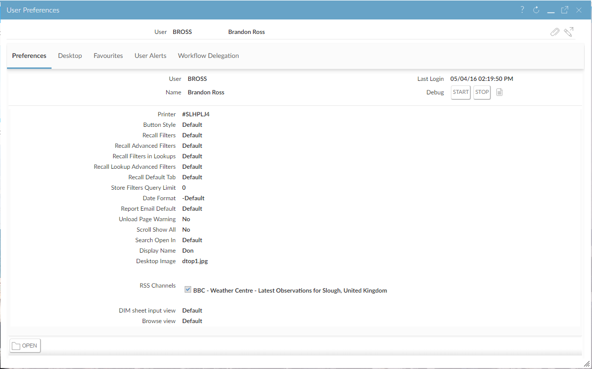

To change your preferences:
- Move the mouse pointer over your profile picture and click
 User Preferences.
User Preferences.

- Click
 to edit your preferences.
to edit your preferences. - Make the changes and click
 to save them.
to save them.
Using User Preferences, you can change various settings that relate to how you use
You can also manage your
User Preferences.

to edit your preferences. to save them.